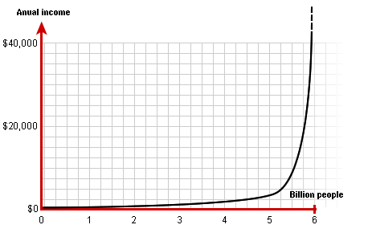

|
The Global Rich List calculations
are based on figures from the World Bank Development Research Group. To calculate the most accurate position for each individual we assume that the world's total population is 6 billion¹ and the average worldwide annual income is $5,000².
Below is the yearly income in percentage for different income groups according to the World Bank's figures³.
|
|
| Percentage of world population |
Percentage of world income |
Yearly individual income |
Daily individual income |
|
| Bottom 10 percent | 0.8 | $400 | $1,10 |
| Bottom 20 percent | 2.0 | $500 | $1,37 |
| Bottom 50 percent | 8.5 | $850 | $2,33 |
| Bottom 75 percent | 22.3 | $1,487 | $4,07 |
| Bottom 85 percent | 37.1 | $2,182 | $5,98 |
|
| Top 10 percent | 50.8 | $25,400 | $69,59 |
| Top 5 percent | 33.7 | $33,700 | $92,33 |
| Top 1 percent | 9.5 | $47,500 | $130,14 |
|
|
The world's distribution of money can also be displayed as the chart below.

|
|
¹ 2003 world population Data Sheet of the Population Reference Bureau.
² Steven Mosher, president of the population research institute, CNN, October 13, 1999.
³ Milanovic, Branco. "True World Income Distribution, 1988 and 1993: First calculations based on household surveys alone", World Bank Development Research Group, November 2000, page 30.
<< Home
|
|